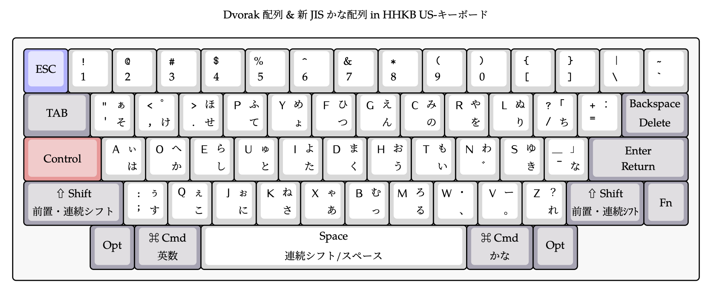

日本語入力のあれこれ
JISキーボードで，QWERTY配列で，ローマ字入力という呪縛
おそらく，普通の人（未定義）はほぼ全員，
- ロウスタッガードキーボード
- JIS配列（いわゆる"普通"の日本語配列キーボード）
- QWERTY（クワーティ）配列
- ローマ字入力
という環境だろうと思われる．
実際，色々試した筆者からすると，1周まわって上記の設定は決して"悪くない"．
多くの人が長い年月で慣れ親しんでおり，タイピングのトップスピードもかなり出る．
普段，多くの人が打つ英語や記号混じりの日本語＋他人のPCを触ったりする時に環境依存しづらい設定という意味では，上記の設定が一番危なくない．
しかし，一方で「他の選択肢」があることをどれだけ知っていて，上記の選択をしているのだろうか？
多くの人が知らないことであるが，パソコンはハード面だけでなくインプット方法というソフト面でも，実は結構いろいろな解が提案されている．
筆者は，
- ロウスタッガード
- US配列（Happy Hacking Keyboard）
- 英語の入力は，「Dvorak配列」
- 入力ソース：Dvorak-QWERTY⌘
- 入力ソース：Dvorak-QWERTY⌘
- 日本語の入力は，「新JISかな配列」
- 入力ソース：ことえり ➙ Azookey
- Karabiner-Elements で「新JISかな配列」をマップ
- 入力ソース：ことえり ➙ Azookey
をハイブリットに使っている．

図1: 筆者のキーボードマップ．日本語は，"かな入力"の一種である「新JISかな」入力を使っており，アルファベットは，英語入力に特化した「Dvorak配列」を使用している．ご自身のキーボードの配列と見比べて「気持ち悪い，めんどくさいことやってんな」と思って貰えれば，正常な反応である．
ロウスタッガードキーボードとは？
JIS配列キーボードって？
QWERTY配列とは？
他にもある，入力配列
ローマ字入力 VS かな入力
ローマ字入力
みんな使っているローマ字入力だが，「qwerty配列以外でローマ字入力をして，楽しよう！」という動きがある．
- Dvorak JP
- 大西配列
かな入力
- 新JIS入力
- 薙刀入力
- 新下駄入力